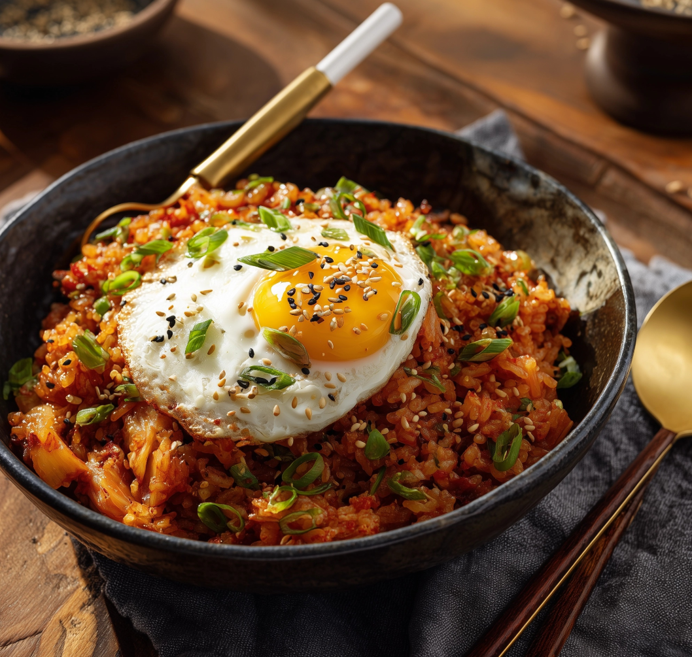

Odin Recipes
Home
Nasi Goreng

Description
Nasi Goreng is Indonesia's beloved fried rice dish, known for its bold flavors, savory-sweet notes, and smoky aroma. Typically made with leftover rice, garlic, shallots, chili, and sweet soy sauce (kecap manis),
it's stir-fried with various proteins like chicken, shrimp, or egg. Served hot, it's often topped with a fried egg and accompanied by cucumber, tomato slices, and krupuk (crispy crackers). Nasi Goreng is a comforting
and adaptable dish enjoyed across the archipelago.
Ingredients
- 2 bowls of cold cooked rice (preferably day-old)
- 2 garlic cloves, finely chopped
- 2 shallots or 1/2 onion, finely chopped
- 1 chili (optional), sliced
- 1-2 eggs
- 2 tbsp kecap manis (sweet soy sauce)
- 1 tbsp soy sauce
- 1 tsp shrimp paste or terasi (optional)
- Protein: chicken, prawns, or leftover meat
- Oil for frying
- Optional toppings: fried shallots, cucumber slices, krupuk, fried egg
Steps
- Heat oil in a wok or skillet.
- Add garlic, shallot, chili, and shrimp paste (if using). Stir-fry until fragrant.
- Add your choice of protein and stir-fry until heated through.
- Add cold rice, breaking up any clumps, and stir-fry thoroughly.
- Add kecap manis and soy sauce. Toss to coat and fry until the rice is hot and slightly crispy.
- Optionally, mix in beaten egg or fry eggs separately to top the dish.
- Serve with fried egg, cucumber, krupuk, and a sprinkle of fried shallots if desired.